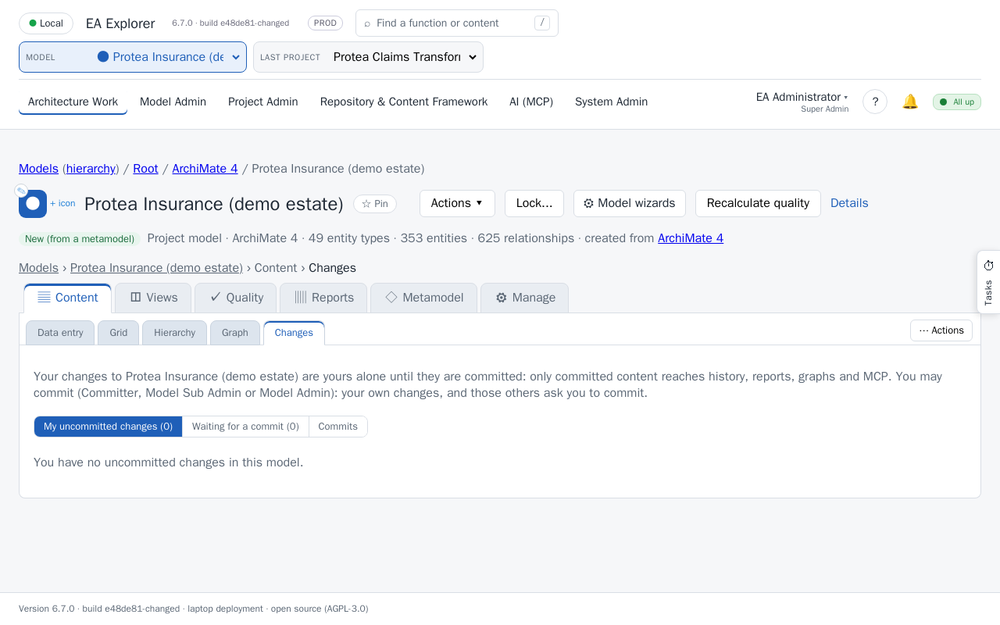

Resolve a clash when committing
For: Practising architects
Someone committed the same thing after you started: choose whose wins.

#/metamodel/{m}/changesWhy do this
A clash happens when someone committed a change to the same thing after you started. Choosing yours or theirs for each keeps both people's work from silently overwriting each other. See Versions, tags and merging.
Content work is the everyday heart of architecture: recording what exists and what should, and how it all connects. EA Explorer checks it against the metamodel as you go and keeps it as your change until it is reviewed.
In TOGAF terms: Phases B, C and D: recording the building blocks and relationships of the baseline and target architectures. See EA Explorer and the TOGAF Standard.
The goal: Your change and someone else's no longer contradict.
Before you start You need a role on the model that may change content (Architect or higher).
Steps
- Commit shows the clashes.
- For each, choose yours or theirs.
- Commit with these choices.